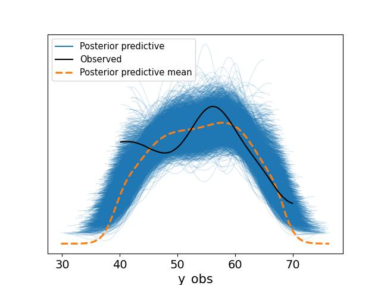

import pymc as pm, scipy.stats as stats
Y = stats.bernoulli(0.7).rvs(20)
theta = 0.5
with pm.Model() as model:
theta = pm.Beta("theta", alpha=1, beta=1)
y_obs = pm.Binomial("eta_obs", n=1, p=theta, observed=Y)
idata = pm.sample(1000, return_inferencedata=True)theta_post = np.array(idata.posterior['theta'])
print (np.mean(theta_post))
plt.hist(theta_post[0],bins=10)
plt.savefig('tser_023_bsts_03.jpg')0.5952869333604922
graphviz = pm.model_to_graphviz(model)
graphviz.graph_attr.update(dpi="300")
graphviz.render("tser_023_bsts_02", format="jpg")Out[1]: 'tser_023_bsts_02.jpg'
pip install tf_keras
pip install git+https://github.com/google/tfp-causalimpact.gitimport pandas as pd
np.random.seed(42)
n = 120
time = np.arange(n)
trend = 0.1 * time
seasonal = 10 * np.sin(2 * np.pi * time / 12)
noise = np.random.normal(0, 3, n)
y = 50 + trend + seasonal + noise
event_start = 80
y[event_start:] -= 20
data = pd.DataFrame({'y': y})
data['y'].plot()
plt.savefig('tser_023_bsts_01.jpg')
[devam edecek]
Kaynaklar